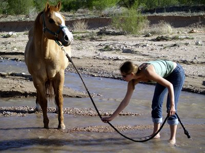

People of mediocre ability can achieve outstanding success because they don't know when to quit. Most men succeed because they are determined to. ~ From a physicist's laboratory manual a while ago.
Unless I fundamentally change, the future will be what I am now. ~ A context from J. Krishnamurti
It is not the strongest of the species that survives, not the most intelligent, but the one most responsive to change. ~ Charles Darwin
All disease begins in the gut. ~ Hippocrates - father of modern medicine
One man's food is another man's poison. ~ Lucretius (or general proverb)
Let food be thy medicine and medicine be thy food. ~ Hippocrates - father of modern medicine
Music gives a soul to the universe, wings to the mind, flight to the imagination, and life to everyone. ~ Plato
Attention to health is life's greatest hindrance. ~ Plato
Human behavior flows from three main sources: desire, emotion and knowledge. Love is a serious mental disease. When the mind is thinking it is talking to itself. ~ Plato
Wise men talk because they have something to say; fools, because they have to say something. ~ Plato
Either you run the day, or the day runs you. ~ Jim Rohn
Some say the world will end in fire,
Some say in ice.
From what I’ve tasted of desire
I hold with those who favor fire.
But if it had to perish twice,
I think I know enough of hate
To say that for destruction ice
Is also great
And would suffice. ~ "Fire and Ice" by Robert Frost
Connected to everything but attached to nothing. ~ Lao Tzu
Attachment is rooted in fear. You lose your fear of loss when you realize you're already whole. Connected to everything by being able to add value to everything.
Attached to nothing as no-thing can take value from you. Just a different spin to it.
Not everything that counts can be counted, and not everything that can be counted counts. ~ Albert Einstein
Nothing happens until something moves. ~ Albert Einstein
Try not to become a man of success, but rather try to become a man of value. ~ Albert Einstein
The secret to creativity is knowing how to hide your sources. ~ Albert Einstein
A little knowledge is a dangerous thing. So is a lot. ~ Einstein
Be impeccable with your word; Do not take anything personally; Do not make assumptions; Always do your best. ~ The Four Agreements by Don Miguel Ruiz
Trying to capture the physicists' precise mathematical description of the quantum world with our crude words and mental images is like playing Chopin with a boxing glove on one hand and a catcher's mitt on the other ~ George Johnson
Empty your mind, be formless and shapeless, like water. If you put water into a cup, it becomes the cup. You put water into a bottle; it becomes the bottle. You put it into a teapot; it becomes the teapot. Water can flow, or it can crash. Be water, my friends! ~ Bruce Lee
We come into this world head first and go out feet first; in between, it is all a matter of balance. ~ Paul Boese
Never look down to test the ground before taking your next step; only he who keeps his eye fixed on the far horizon will find his right road. ~ Dag Hammars, winner of the Nobel Prize in 1961
Forgiveness does not change the past, but it does enlarge the future. ~ Paul Boese
Forgive them even if they're not sorry. ~ Anonymous
When I die, cry not the tears of bitterness but the tears of sadness for the loss of love. ~ Paul Boese
When a mouse makes fun of a cat, there is a hole nearby. ~ African Proverb; (I’ve gone through this too many times, only to be let down and betrayed over and over.)
Three things cannot be long hidden: the sun, the moon and the truth. ~ Buddha

You can do anything if you have enthusiasm. Enthusiasm is the yeast that makes your hopes rise to the stars. Enthusiasm is the spark in your eye, the swing in your gait, the grip of your hand, the irresistible surge of your will and your energy to execute your ideas. Enthusiasts are fighters; they have fortitude; they have staying qualities. Enthusiasm is at the bottom of all progress! With it, there is accomplishment. Without it, there are only alibis. ~ Henry Ford
If you want to fly like an eagle don't hang out with the turkeys. ~ source: Flipboard news article
If you want to go fast, go alone. If you want to go far, go together. ~ African proverb
If I have seen further than others, it is by standing upon the shoulders of giants. ~ Sir Isaac Newton
If you want knowledge, you must take part in the practice of changing reality. ~ Mao Zedong
If you're going through hell keep going. ~ Winston Churchill
Getting kicked down in life is a given. Getting up and moving forward is a choice. ~ Someone
When the blind lead the blind, both shall fall into the ditch. -- (late 9th century in English; Bible, Luke Chapter 6)
And will you succeed? Yes! You will indeed! (98 and 3/4 percent guaranteed). ~ Dr. Seuss
I stopped explaining myself when I realized people only understand from their level of perception. ~ Annonymous
There comes a time when one must take a position that is neither safe, nor politic, nor popular, but one must take it because one's conscience tells one that it is right. ~ Martin Luther King
You remain what you always are. You do not grow by acquiring something nor wither away by losing it. You remain what you always are. ~ Sri Ramana Maharshi
I hear, I forget; I see, I remember; I do, I understand. ~ Confucious
Any necessary matter is by nature boring. ~ Aristotle, Metaphysics IV.5
Dignity does not come in possessing honors, but in deserving them. ~ Aristotle
Wit is educated insolence. ~ Aristotle
The final value of life lies in the ability to wake up in mind and think, not just in living. ~ Aristotle
It is often stated that of all the theories proposed in the century, the silliest, is quantum theory. Some say the only thing that quantum theory has going for it, in fact, is that it is unquestionably correct. ~ R. Feynman
Philosophy of science is about as useful to scientists as ornithology is to birds. ~ Feynman
Physics is like sex: sure, it may give some practical results, but that's not why we do it. ~ Richard Feynman (?)
Believe and you will understand; faith precedes, intelligence follows. ~ Saint Augustine (this philosophy helped me in Quantum Mechanics and it really works!)
Anyone who is not shocked by quantum theory has not understood it. ~ N. Bohr
Tell the truth and tell it to the one you love before someone else does. ~ (taken from Mrs. Karen Jansheski's email, Abu's teacher)
If you risk nothing, you risk everything. ~ (a friend of mine made this a motto of his life)
When all else lost, the future still remains. ~ Bovee
Any matter begins with a great spiritual disturbance. ~ Antonin Artaud
Surround yourself with the right people ... ~ Arnold W. Donald
PEBBLE
BOULDER
PEBBLE
BOULDER
PEBBLE
BOULDER
PEBBLE
BOULDER
PEBBLE
BOULDER
PEBBLE
PEBBLE
PEBBLE
PEBBLE
PEBBLE
Joy is not in things, but in us. ~ (taken from Lisa V home's postcard)
Do the right thing, even when no one is looking. It's called integrity. ~ Someone :)
I heard an old Tibetan story about two owls sitting on a tree. One owl caught a snake in its mouth, ready to prepare breakfast. The other owl had caught a rat. Both of them sat with their food - one with a snake, the other with a rat. Suddenly, the snake saw the rat and forgot it was about to die - it tried to attack the rat. The rat, seeing the snake, got scared and started trembling, thinking it was going to die too. The owls were surprised. One looked at the other and asked, "Brother, what's going on here?" The other owl replied, "It’s clear. The snake is so greedy that it forgot about its own death just to chase more food. And the rat is so afraid of dying that it’s panicking even before anything happens. That’s how we are too - our desire for pleasure can blind us to danger, and our fear of death can overwhelm us even when nothing has happened yet. We don't fear death itself, we fear what might happen. And our greed and desire for pleasure are so intense that we can’t see death standing right in front of us." ~ Indian gurus
Willing is not enough, you should work; Knowledge is not enough, you should apply. ~
Bloosm where you are planted. ~ Annonymous
Even nine women can not make a child in one month. ~
Failure is the mother of success. ~
Success is a ladder which can not be climbed with your hands in pockets. ~
Necessity is the mother of invention. ~
Refresh everyday, renew everyday, reorganize everyday; Every dog has a day; Every cloud has a silver line; Every glitter is not the gold; Everything has pros and cons; Every morning one should wash his face; Every person is talent. ~
Well-timed silence hath more eloquence than speech. ~ Martin F. Tupper
I criticize by creation -- not by finding fault. ~ Cicero
The electron is not as simple as it looks. ~ Lawrence Bragg
OK, so you're a Ph.D. Just don't touch anything. ~
All of physics is either impossible or trivial. It is impossible until you understand it, and then it becomes trivial. ~ Rutherford
If your experiment needs statistics, then you ought to have done a better experiment. ~ Rutherford
You should never bet against anything in science at odds of more than about 10^12 to 1. ~ Rutherford
Never express yourself more clearly than you think. ~ Bohr
Fermi was asked what characteristics physics Nobelists had in common. He answered, "I cannot think of a single one, not even intelligence." ~
This message was written entirely with recycled electrons. ~
This isn't right. This isn't even wrong. ~ Pauli
God made the integers; all else is the work of man. ~ Kronecker
I believe that the most important difference between man and other living creatures lies not so much in having or not having a "soul" or a "spirit" but in the astonishing fact that man must "work" as a condition of existence, while a bird does not need to. ~ M.C. Escher
What do you take me for, an idiot?b> ~ Charles de Gaulle when a journalist queried as to whether he was happy
Your Highness, I have no need of this hypothesis. ~ Pierre Laplace (Much better if you know the context.)
A clever man commits no minor blunders. ~ Goethe
Being on the tightrope is living; everything else is waiting. ~ Karl Wallenda
When ideas fail, words come in very handy. ~ Goethe
We all agree that your theory is crazy, but is it crazy enough? ~ Niels Bohr (1885-1962)
Talent does what it can; genius does what it must. ~ E.G. Bulwer-Lytton
The power of accurate observation is frequently called cynicism by those who don't have it. ~ George Bernard Shaw
A mathematician is a device for turning coffee into theorems. ~ Paul Erdos
Don't be so humble -- you are not that great. ~ Golda Meir
Arrogant and right is surely better than humble and wrong. ~ Geoff Arbuthnot
The average Ph.D thesis is nothing but the transference of bones from one graveyard to another. ~ JF Dobie
The chief knowledge that a man gets from reading books is the knowledge that very few of them are worth reading. ~ H.L. Mencken
When a thing is funny, search it carefully for a hidden truth. ~ George Bernard Shaw
But man can and must deny woman: action, action alone justifies life and satisfies the white man. . . . A man is the sum of his actions, of what he has done, of what he can done. Nothing else. ~ Ferral in A. Malraux's - Man's Fate
Tell me and I forget. Show me and I remember. Let me do and I understand. ~ Confucius
The one serious conviction that a man should have is that nothing is to be taken too seriously. ~ Nicholas Butler
A life spent making mistakes is not only more honorable, but more useful than a life spent doing nothing. ~ George Bernard Shaw
I do not feel obliged to believe that the same God who has endowed us with sense, reason, and intellect has intended us to forgo their use. ~ Galileo
A welfare state is frightened of every poor person who tries to get in and every rich person who tries to get out. ~ Harry Browne
Few people think more than two or three times a year; I have made an international reputation for myself by thinking once or twice a week. ~ George Bernard Shaw
Psychiatry enables us to correct our faults by confessing our parents' shortcomings. ~ Laurence J. Peter
Never offend people with style when you can offend them with substance. ~ Sam Brown
Work is not man's punishment. It is his reward and his strength and his pleasure. ~ George Sand
In science one tries to tell people, in such a way as to be understood by everyone, something that no one ever knew before. But in poetry, it's the exact opposite. ~ Paul Dirac
A guy once told me, "Do not have any attachments, do not have anything in your life you are not willing to walk out on in 30 seconds flat if you spot the heat around the corner." ~ Quote from the movie "Heat"
My original decision to devote myself to science was a direct result of the discovery which has never ceased to fill me with enthusiasm since my early youth -- the comprehension of the far from obvious fact that the laws of human reasoning coincide with the laws governing the sequences of the impressions we receive from the world about us; that, therfore, pure reasoning can enable man to gain an insight into the mechanism of the latter. In this conneciton, it is of paramount importance that the outside world is something independent from man, something absolute, and the quest for the laws which apply to this absolute appeared to me as the most sublime scientific pursuit in life. ~ Max Planck
Ask her to wait a moment - I am almost done. ~ Carl Gauss, upon hearing his wife was dying while he was working
Our greatest battles are that with our own minds. ~ Jameson Frank
Nature abhors a moron. ~ H.L. Mencken
Ah, women. They make the highs higher and the lows more frequent. ~ Friedrich Nietzsche
All truly great thoughts are conceived by walking. ~ Friedrich Nietzsche
He who despises himself esteems himself as a self-despiser. ~ Friedrich Nietzsche
All sciences are now under the obligation to prepare the ground for the future task of the philosopher, which is to solve the problem of value, to determine the true hierarchy of values. ~ Friedrich Nietzsche
I have made this letter longer than usual because I lack the time to make it shorter. ~ Blaise Pascal
The creative life involves alineation from others and from society. This alienation will sometimes be experienced as acutely painful, but when one is creative that price does not seem too steep. When one's creative powers flag and one is dissatisfied with one's own work, it may not seem worth it. At such times, when one is not creative, one may actually envy those who live a very different kind of life, endow them with a bliss they do not feel, and thus deceive oneself. But when one is creative, one would not change places with anyone -- except possibly one who is more creative. ~ Walter Kaufmann
It is not the answer that enlightens, but the question. ~ Eugene Ionesco
Modern education is also at fault in another way. Not only is it false that everyone has the gifts to become a competent composer, painter, novelist, or physicist, but the creative life is hard, and to find satisfaction in it requires an immense amount of self-discipline. But self-discipline has been neglected in modern education. The point is not that schools are not sufficiently disciplinarian. Most of them are too disciplinarian in unnecessary, petty ways and thus bring discipline into disrepute. What has not been stressed sufficiently is functional self-discipline: the need to master skills and subjects that one may not feel like learning but without which competence in one's chosen field cannot be had.... ~ Walter Kaufmann
Daring ideas are like chessmen moved forward; they may be beaten, but they may start a winning game. ~ Johann Wolfgang von Goethe
We live in an atmosphere of shame. We are ashamed of everything that is real about us; ashamed of ourselves, of our relatives, of our incomes, of our accents, of our opinions, of our experience, just as we are ashamed of our naked skins. ~ George Bernard Shaw
I dread success. To have succeeded is to have finished one's business on earth, like the male spider, who is killed by the female the moment he has succeeded in his courtship. I like a state of continual becoming, with a goal in front and not behind. ~ George Bernard Shaw
It seldom happens that a man changes his life through his habitual reasoning. No matter how fully he may sense the new plans and aims revealed to him by reason, he continues to plod along in old paths until his life becomes frustrating and unbearable - he finally makes the change only when his usual life can no longer be tolerated. ~ Leo Tolstoy (Truly in his spirit. Just when I start to think man can be heroic again, good 'ol Leo tries to cast a shadow on the likelihood of that notion. He's more or less right here, though.)
If you want to truly understand something, try to change it. ~ Kurt Lewin
But what minutes! Count them by sensation, and not by calendars, and each moment is a day. ~ Benjamin Disraeli
We say that the hour of death cannot be forecast, but when we say this we imagine that hour as placed in an obscure and distant future. It never occurs to us that it has any connection with the day already begun or that death could arrive this same afternoon, this afternoon which is so certain and which has every hour filled in advance. ~ Marcel Proust
The kind of humor I like is the thing that makes me laugh for five seconds and think for ten minutes. ~ William Davis
Science... never solves a problem without creating ten more. ~ George Bernard Shaw
In science, "fact" can only mean "confirmed to such a degree that it would be perverse to withhold provisional assent." I suppose that apples might start to rise tomorrow, but the possibility does not merit equal time in physics classrooms. ~ Stephen Jay Gould
Know how sublime a thing it is to suffer and be strong. ~ Longfellow
It is a good morning exercise for a research scientist to discard a pet hypothesis every day before breakfast. It keeps him young. ~ Konrad Lorenz
Facts are the air of scientists. Without them you can never fly. ~ Linus Pauling
The drops of rain make a hole in the stone not by violence but by oft falling. ~ Lucretius
Wisdom begins in wonder. ~ Socrates
Courage, however, is the best slayer - courage which attacks: which slays even death itself, for it says, "Was that life? Well then! Once more!" ~ On the vision and the riddle -- Friedrich Nietzsche [Perhaps my favorite quote of all time from Nietzsche]
What has the hide of my humility not borne? I dwell at the foot of my height. How high are my peaks? No one has told me yet. But my valleys I know well. ~ The Stillest Hour -- Friedrich Nietzsche
Indeed, in me there is something invulnerable and unburiable, something that explodes rock: that is my will. ~ The tomb song -- Friedrich Nietzsche
Who among you can laugh and be elevated at the same time? ~ On Reading & Writing -- Friedrich Nietzsche
Free from what? As if that mattered to Zarathustra! But your eyes should tell me brightly: free for what? ~ On the way of the creator -- Friedrich Nietzsche
"He who seeks, easily gets lost. All loneliness is guilt" - thus speaks the herd. ~ On the way of the creator -- Friedrich Nietzsche
Escape from the idolatry of the superflous! ~ On the new idol -- Friedrich Nietzsche
They call you heartless; but you have a heart, and I love you for being ashamed to show it. You are ashamed of your flood, while others are ashamed of their ebb. ~ On War & Warriors -- Friedrich Nietzsche
If you have an important point to make, don't try to be subtle or clever. Use a pile driver. Hit the point once. Then come back and hit it again. Then hit it a third time - a tremendous whack. ~ Winston Churchill
Solitary trees, if they grow at all, grow strong. ~ Winston Churchill
Dream no small dreams, for they have no power to move the hearts of men. ~ Johann Wolfgang von Goethe
There is nothing so stupid as the educated man if you get him off the thing he was educated in. ~ Will Rogers
Patriotism is the willingness to kill and be killed for trivial reasons. ~ Bertrand Russell
To be idle is a short road to death and to be diligent is a way of life; foolish people are idle, wise people are diligent. ~ Buddha
Nothing in life is to be feared. It is only to be understood. ~ Marie Curie
So you think that money is the root of all evil. Have you ever asked what is the root of all money? ~ Ayn Rand
The smallest minority on earth is the individual. Those who deny individual rights cannot claim to be defenders of minorities. ~ Ayn Rand
Contradictions do not exist. Whenever you think you are facing a contradiction, check your premises. You will find that one of them is wrong. ~ Ayn Rand
Achieving life is not the equivalent of avoiding death. ~ Ayn Rand
A government is the most dangerous threat to man's rights: it holds a legal monopoly on the use of physical force against legally disarmed victims. ~ Ayn Rand
A creative man is motivated by the desire to achieve, not by the desire to beat others. ~ Ayn Rand
The most difficult thing of all is contentment and acceptance. ~ M.C. Escher
It seems to me that feeling and analysis are not incompatible, and ought to be complementary. You do not have to be a physicist to experience the miracle of gravity, but with the help of the intellect, your awareness of the wonder may be deeper. ~ M.C. Escher
We do not need the moon to play an absorbing game. The earth itself, our mightly clod of earth, is sometimes sufficient for our imagination. ~ M.C. Escher
The person who is lucidly aware of the miracles surrounding him, and who has learned to tolerate loneliness, has made a lot of progress on the path to widsom -- or am I wrong? ~ M.C. Escher
Don't go around saying the world owes you a living. The world owes you nothing. It was here first. ~ Mark Twain
Fortune knocks at every man's door once in a life, but in a good many cases the man is in a neighboring saloon and does not hear her. ~ Mark Twain
Every one is a moon, and has a dark side which he never shows to anybody. ~ Mark Twain
A University without students is like an ointment without a fly. ~ Ed Nather, astronomy prof at UT-Austin
Science is not belief, but the will to find out. ~ Anon
The aim of science is to seek the simplest explanation of complex facts. We are apt to fall into the error of thinking that the facts are simple because simplicity is the goal of our quest. The guiding motto in the life of every natural philosopher should be ``Seek simplicity and distrust it.' ~ Whitehead
Nobody knows why, but the only theories which work are the mathematical ones. ~ Michael Holt
Research is to see what everybody else has seen, and to think what nobody else has thought. ~ Albert Szent-Györgi
If any student comes to me and says he wants to be useful to mankind and go into research to alleviate human suffering, I advise him to go into charity instead. Research wants real egotists who seek their own pleasure and satisfaction, but find it in solving the puzzles of nature. ~ Albert Szent-Györgi
I have a paper afloat, with an electromagnetic theory of light, which, till I am convinced to the contrary, I hold to be great guns. ~ Maxwell, in a letter to C.H. Cay
Every honest researcher I know admits he's just a professional amateur. He's doing whatever he's doing for the first time. That makes him an amateur. He has sense enough to know that he's going to have a lot of trouble, so that makes him a professional. ~ Charles Kettering
A day without fusion is like a day without sunshine. ~
It was absolutely marvelous working for Pauli. You could ask him anything. There was no worry that he would think that a particular question was stupid, since he thought all questions were stupid. ~ Victor Weisskopf
Physics is not a religion. If it were, we'd have a much easier time raising money. ~ Leon Lederman
Research! A mere excuse for idleness; it has never achieved, and never will achieve, any results of the slightest value. ~ Benjamin Jowett (British Theologian)
The trouble with being punctual is that people think you have nothing more important to do. ~
I drink to make other people interesting. ~ George Jean Nathan
Love is the triumph of imagination over intelligence. ~ H.L. Mencken
Only through hard work and perserverance can one truly suffer. ~
If God is dead, who will save the Queen? ~
How you can tell its going to be a rotton day #1040: Your income tax refund check bounces. ~
Biology is the only science in which multiplication means the same thing as division. ~
Give a man a fish, he eats it for a day; teach a man to fish, he eats it for his life. ~
One who does not know and does not know he does not know, he is stupid; go around him; One who does not know and knows he does not know, he is ignorant or untaught; teach him; One who knows and does not know he knows, he is asleep; wake him up; One who knows and knows he knows, he is wise; follow him. ~
Once Amma Amritapuri asked to a businessman: Why are you so much successful? Businessman: By making good decision; Amma: How do you know a decision is good; Businessman: By experience; Amma: How do you learn the experience; Businessman: By making mistakes; ~
Experience is the name we all give to our mistakes. ~ Oscar Wilde
Experience is what you get when you don't get what you want. ~
Men learn while they teach. ~ Seneca
Old wood to burn, old wine to drink, old friend to trust, old book to read. ~
What is life? Life is a pendulum between a smile and a tear. Life is a perpetual triumph over the grave. Life is but an endless series of experiments. Life is a long lesson in humility. Life is not a victory, but battle. ~
You may judge a flower or a butterfly by its looks, but not a human being. ~ Rabindranath Tagore
Since a politician never believes what he says, he is surprised when others believe him. ~ Charles de Gaulle
LOVE is life in its fulness like the cup with its wine. ~ Rabindranath Tagore, "Stray Birds"
A man's respect for law and order exists in precise relationship to the size of his paycheck. ~ Adam Clayton Powell
Every moment Nature starts on the longest journey, and every moment she reaches her goal. ~ Goethe
Love does not dominate; it cultivates. ~ Goethe
The man of imagination and no culture has wings without feet. ~ Joubert
A spoiled child never loves its mother. ~ Sir Henry Taylor
The ethic of reciprocity or
The Golden Rule
is a fundamental moral principle which simply means
"treat others as you would like to be treated."
It is arguably the most essential basis for the modern concept of human right. ~ collection
You can fool or cheat some people all the time, you can fool all the people sometimes, but you can not fool all the people all the time. ~
The history of all hitherto existing society is the history of class struggles. ~ Karl Marx
Why god has made two ears? To hear the things from one ear and let it go about another. ~
Nothing can stop the man with the right mental attitude from achieving his goal; nothing on earth can help the man with the wrong mental attitude. ~ Thomas Jefferson
Women might be able to fake orgasms but men fake whole relationships ~ Sharon Stone
Quote of the Day - If your life is free from failure, you're not taking enough risks. ~ Anonymous
Arguing with an engineer is like wrestling with a pig in the mud; after a while you realize you are muddy and the pig is enjoying it. ~
Everything comes to him who waits. ~
He who makes no mistakes makes nothing. ~
If your pictures aren't good enough, you are not close enough. ~
My pictures aren't blurry .... they are an expression to the fact that the world never sits still. ~
There are always two people in every picture: the photographer and the viewer. ~
It is better to live your own destiny imperfectly than to live an imitation of somebody else's life with perfection. ~
Life is like a good black and white photograph, there's black, there's white, and lots of shades in between. ~
Change is the law of life and those who look only to the past or the present are certain to miss the future. ~
The man who graduates today and stops learning tomorrow is uneducated the day after. ~
Age may wrinkle the face, but lack of enthusiasm wrinkles the soul. ~
Get busy living or get busy dying, life begins at your comfort level's end. ~
Always remember money is not everything; but make sure that you have made a lot of it before talking such nonsense. ~ Warren Bullet
I and the public know What all schoolchildren learn, Those to whom evil is done Do evil in return. ~ W. H. Auden
Anyone who keeps the ability to see beauty never grows old. ~ Franz Kafka
It is when you give of yourself that you truly give. ~ from "The Prophet" Kalil Gibran
Life is the art of drawing sufficient conclusions from insufficient premises. ~ Samuel Butler
It is not enough to do your best; you must know what to do, and THEN do your best. ~ W. Edwards Deming
If you want to make enemies, try to change something. ~ Woodrow Wilson
Every really new idea looks crazy at first. ~ Alfred North Whitehead
We can do anything we want as long as we stick to it long enough. ~ Helen Keller
If you deliberately plan on being less than you can capable of being, then I warn you that you will be unhappy for the rest of your life. ~ Abraham Maslow
Every person's work, whether it be literature or music or pictures or anything else, is always a portrait of them self. ~ Samuel Butler
I think if you love what you do and enjoy a simple life (simple needs), you will never get old. ~ Janette Toral
All you touch and all you see is all your life will ever be. ~ Pink Floyd
Be a first rate version of yourself, not a second rate version of someone else. ~ Judy Garland
I leave no trace of wings in the air, but I am glad I have had my flight. ~ Tagore
Life is the art of sometimes holding on, sometimes letting go. ~ Paulo Coelho
Don't tell me how educated you are, tell me how much you traveled. ~ Mohammed
Every morning is the symbol of rebirth of our life. So forget all yesterday's bad moments & make today beautiful. That's why we say always GOOD MORNING. ~
People learn to lie at some point, because. . .Everybody doesn't deserve the truth. ~
Always Start Your Day By Doing What Is Necesary? Then Start Doing What Is Possible? Suddenly You Will Find,You Are Able To Do The Impossible. ~
LIFE is Beautiful, only for those who know how to celebrate the painful moments... ~
There's always a little truth behind every 'just kidding.'
A little knowledge behind every 'I don't know.'
A little emotion behind every 'I don't care.'
A little love behind every 'I hate you!'
A little uneasiness behind every 'I'm okay.'
A little pain behind every 'forget it.'
A little fear behind every 'leave me alone.'
A little hope behind every 'goodbye.'
And a little 'something' behind every 'nothing.'
Author Unknown
But Very Much Appreciated! ~
THE BOILING FROG SYNDROME..!! Put a frog in a vessel of water and start heating the water... As the temperature of the water rises, the frog is able to adjust its body temperature accordingly... The frog keeps on adjusting with increase in temperature... Just when the water is about to reach boiling point, the frog is not able to adjust anymore... At that point the frog decides to jump out... The frog tries to jump but is unable to do so, because it lost all its strength in adjusting with the water temperature... Very soon the frog dies. What killed the frog? Many of us would say the boiling water... But the truth is what killed the frog was its own inability to decide when it had to jump out... We all need to adjust with people and situations, but we need to be sure when we need to adjust and when we need to confront / face... There are times when we need to face the situation and take the appropriate action... If we allow people to exploit us physically, mentally, emotionally or financially, they will continue to do so... We have to decide when to jump... Let us jump while we still have the strength !! Think on It !! ~
{kind=link}